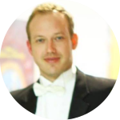
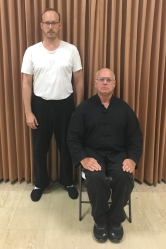
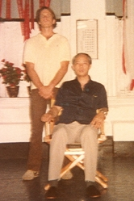
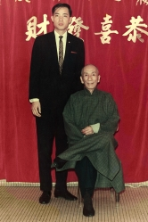

Charles Hardt
Violinist & Web Developer
I am a violinist in the Miami area. I have
freelanced in South Florida since 1997, playing regularly with
the Naples Philharmonic, the Florida Grand Opera, the Palm Beach Symphony, the Miami City Ballet, Boca Pops Orchestra, and many other orchestras. I have
performed on stage with Placido Domingo, Renee Fleming, Kathleen Battle, Charles Castleman, Itzhak Perlman, Emanuel Ax, and many other of the greatest artists of our day.
I am also a front end web developer and a merchant marine captain with a 100-ton license, near shore, with the sailing and towing endorsement. My other interests include Ving Tsun kung fu, which I learned in the Moy Yat lineage,
sailing, books, religion, and other things.
Contact
Teachers
Music
- From 2015–2020, I studied with the legendary virtuoso Charles Castleman, who was a student of Emanuel Ondricek and Ivan Galamian. Ondricek was a student of Otakar
Sevcik. Galamian was a student of Lucien Capet and Konstantin Mostras, who was a student of Leopold Auer. Charlie taught me about being a virtuoso violinist in the grand tradition.
- From 2014–2018, I learned score study from Thom Sleeper. I was Thom’s concertmaster for his last five years at the university. Thom taught me about large-scale structure, about the power of believing in people, and that it’s all about the music, not yourself.
- From 1994–2000, and again from 2014–2015, I studied with Glenn Basham, concertmaster of the Naples Philharmonic.
He was a student of Yuval Yaron and Vartan Manoogian. Yaron was a student of Joseph Gingold and Jascha Heifetz. Manoogian was a student of Galamian. Glenn mentored me for many years and taught me that there are no excuses. He gave me a modern technique, taught me how to play in an orchestra, gave me many opportunities, and shielded me from many pitfalls.
- In the summer of 1997, I studied with the legendary soloist Ruggiero Ricci, who was a student of Louis Persinger. Ricci taught me a lot about left-hand technique.
Ving Tsun
-



On May 19, 2016, Julian Cordero aka Moy Yee Hop opened my fists. In 10 private lessons, he and his student Daniel taught me Siu Nim Tau (小念頭), the
center punch (日字中捶), palm strike (點掌), throat chop (拂手), the Paak Sau drill (拍手), and the wall bag (沙包).
Julian Sifu taught me to play Siu Nim Tau as slowly as the minute hand of a clock, and that the more relaxed Taan Sau is,
the more kung fu enters your hands. In my last lesson, he taught me Golden Rooster Stands on One Leg (金雞独立) and said that the next time he saw me, he should be able to sit on my raised knee.
- On May 9, 2017, with Sifu Julian's permission, I became a student of his kung fu brother Sifu Robert Smith. Sifu Robert's school was 10 minutes away from University of Miami
and Sifu Julian's was a 2 hour's drive, so changing schools made it possible to continue training while I was gaining a doctorate at the University of Miami. Both Julian Sifu and Sifu Robert were high-level early disciples of Moy Yat, one of the top students of the legendary Yip Man.
- In October 2019, I became an indoor disciple of Sifu Robert. In our school, we do not perform the baai si (拜師) ceremony, serve Sifu tea, or do the three kneels and nine kowtows. A lineage photo was taken and I gave
Sifu a red envelope.
- The sihings I have learned most from are Mark Chen, Nigel Jordan, Yoandry Lopez, Ben Ivey, Alejandro Gonzalez, and Lester Rojas. Jan Fine taught me Chum Kiu (尋橋). Daniel Zapata taught me Biu Ji (鏢指). Whenever I learned a new section of the Muk Yan
Jong
(木人樁), I played it for Nigel or Yoandry and they corrected me. Sifu taught me the first part of the Gwan (六點半棍). I learned a lot from Alejandro and Lester during our training sessions on the
back patio. Throughout
the summer of 2019, we trained for 4 hours at a
time, even on the hottest days of the year.
My Repertoire
Symphonic
- Bartok Concerto No. 2
- Brahms Concerto
- Chausson Poeme
- Glazunov Concerto
- Mozart Concerto No. 4
- Prokofiev Concerto No. 1
- Sibelius Concerto
Virtuoso, Recital, & Salon Pieces
- Bach: Sonata No. 1, Partita No. 2
- Bartok: Rhapsody
- Beethoven: Sonata No. 6
- Brahms: Hungarian Dance No. 1
- Chopin/Milstein: Nocturne No. 20 in C-sharp minor
- Debussy: Sonata
- Ernst: Hungarian Melodies
- Glazunov Entr’acte
- Hubay: Carmen Fantaisie, Csardas No. 5 “The Waves of Balaton”
- Kreisler: Caprice Viennois, Gypsy Caprice, Tambourin Chinois
- Mozart: G Major Sonata
- Raff: Cavatina
- Saint-Lubin: Fantasie on the Sextet from Lucia di Lammermoor
- Saint-Saens/Ysaye: Caprice in the form of a waltz
- Sarasate: Jota Navarra, Malaguena
- Sauret: Farfalla
- Schumann/Heifetz: Prophet Bird
- Scriabin/Szigeti: Etude in Thirds
- Stravinsky: Divertimento
- Suk: Un poco triste, Burleska
- Weiner: Lakadolmas
- Wieniawski: L'Ecole Moderne, Polonaise in D
Orchestra Experience
| Dates |
Work |
2013–Present
1997–2008 |
Naples Philharmonic, substitute violinist |
| 2008–2020 |
Florida Grand Opera, violinist |
| 2012–Present |
Palm Beach Symphony, violinist |
| 2014–2019 |
Henry Mancini Institute Orchestra, concertmaster |
| 2006–2014 |
Miami Symphonic Services, studio musician: commercial albums with Christian Castro, Alejandro Sanz, and many other recording projects. |
| 2014–2019 |
Frost School Symphony Orchestra, concertmaster |
| 1997–Present |
Freelance work with most regional, local, and pick-up orchestras in South Florida: Andrea Bocelli Orchestra, Boca Pops Orchestra, Il Divo Orchestra, Miami City Ballet, Miami Symphony, The Naples Players, New World Symphony, Opera Naples, Orchestra Miami, Palm Beach Opera, Palm Beach Pops, Southwest Florida Symphony, Symphony of the Americas, and many others. |
Favorite Books in My Collection
- The 1,000 Good Books. All of them.
- The Harvard Classics. A liberal arts education in only 5½ feet of books.
- Great Books of the Western World. The Syntopicon is an invaluable research tool.
- Goffine's Devout Instructions, 1905. Condition: Fine. Could have been printed yesterday.
- Catholic Gems, 1895. Condition: Good. A beautiful oversized family devotional book from the golden age of printing. It contains a fascinating and erudite life of the Blessed Virgin and countless etchings and color prints.
- Homer: OED Iliadis & Odysseae.
- Clyde Pharr. Homeric Greek: A Book for Beginners.
- Schoder & Horrigan. A Reading Course in Homeric Greek.
- Richard Cunliffe. A Lexicon of the Homeric Dialect.
- Goodspeed & Owen. Homeric Vocabularies.
- The Iliad, trans. Fitzgerald. My favorite translation.
- Jasper Griffin, Homer on Life and Death.
- Andreas Moser. Joseph Joachim. A Biography. Joachim’s original biographer. A rare book. Brings to life the man and the world he lived in.
- Stefan Zweig. The World of Yesterday. Vividly brings back to life the civilization that went up in smoke in the Great War.
Favorite Violinists
Charles Castleman,
Christian Ferras,
Andre Gertler,
Jascha Heifetz,
Leonid Kogan,
Nathan Milstein,
Victoria Mullova,
Erika Morini,
David Nadien,
Ginette Neveu,
David Oistrakh,
Vasa Prihoda,
Benno Rabinof,
Ossy Renardy,
Isaac Stern
Certifications, Diplomas, and Other Stamps of Approval from Administration
- 1996: Certificate of Distinction: “Smokes Weird Shit But Is Really Cool,” University of Miami, Walsh Tower dorm, Third Floor
- 1999: Bachelor of Music, University of Miami, School of Music
- 2016: Master of Music, University of Miami, Frost School of Music
- 2020: Doctorate of Musical Arts, University of Miami, Frost School of Music